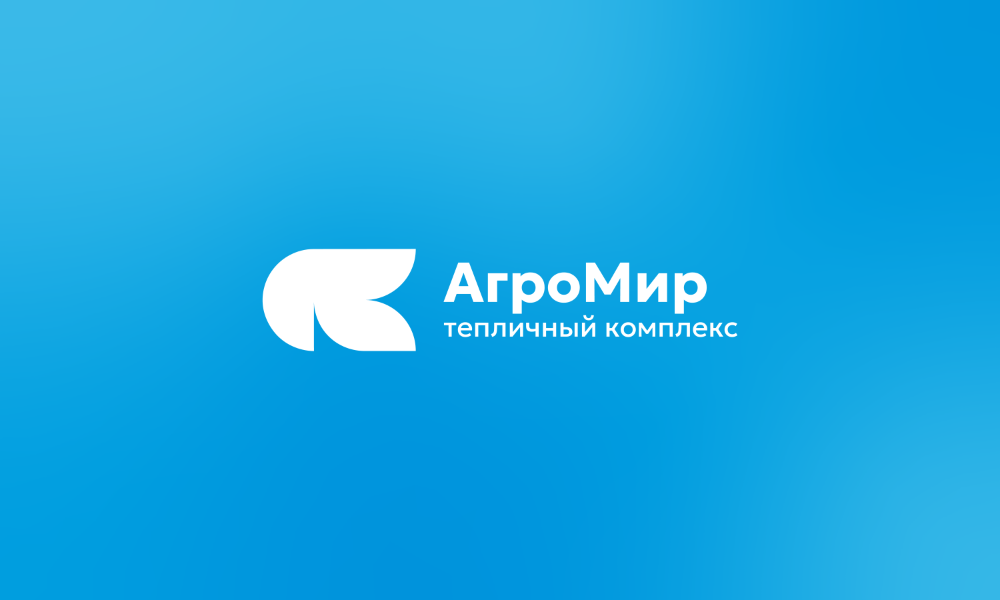
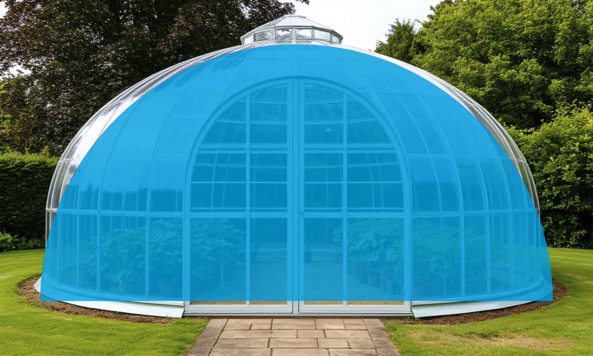
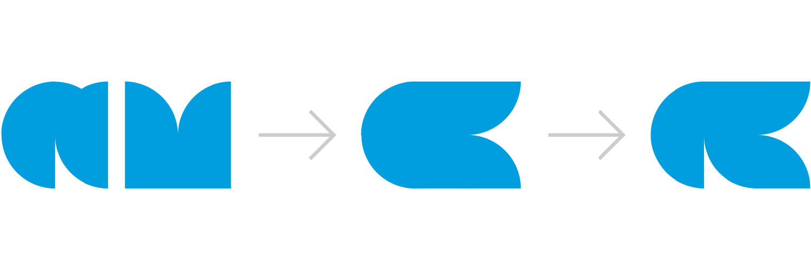
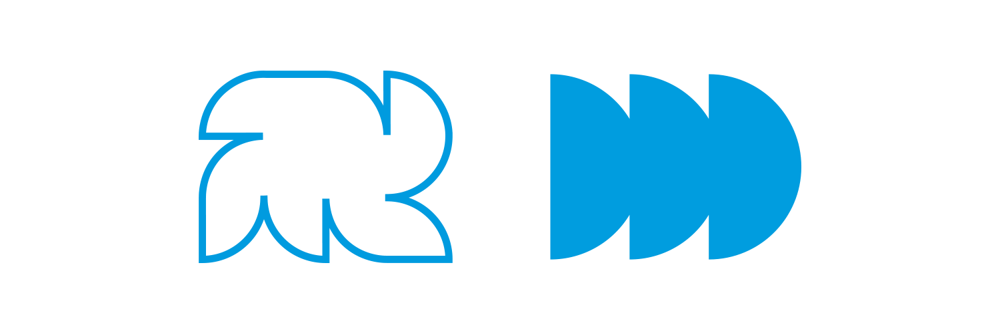
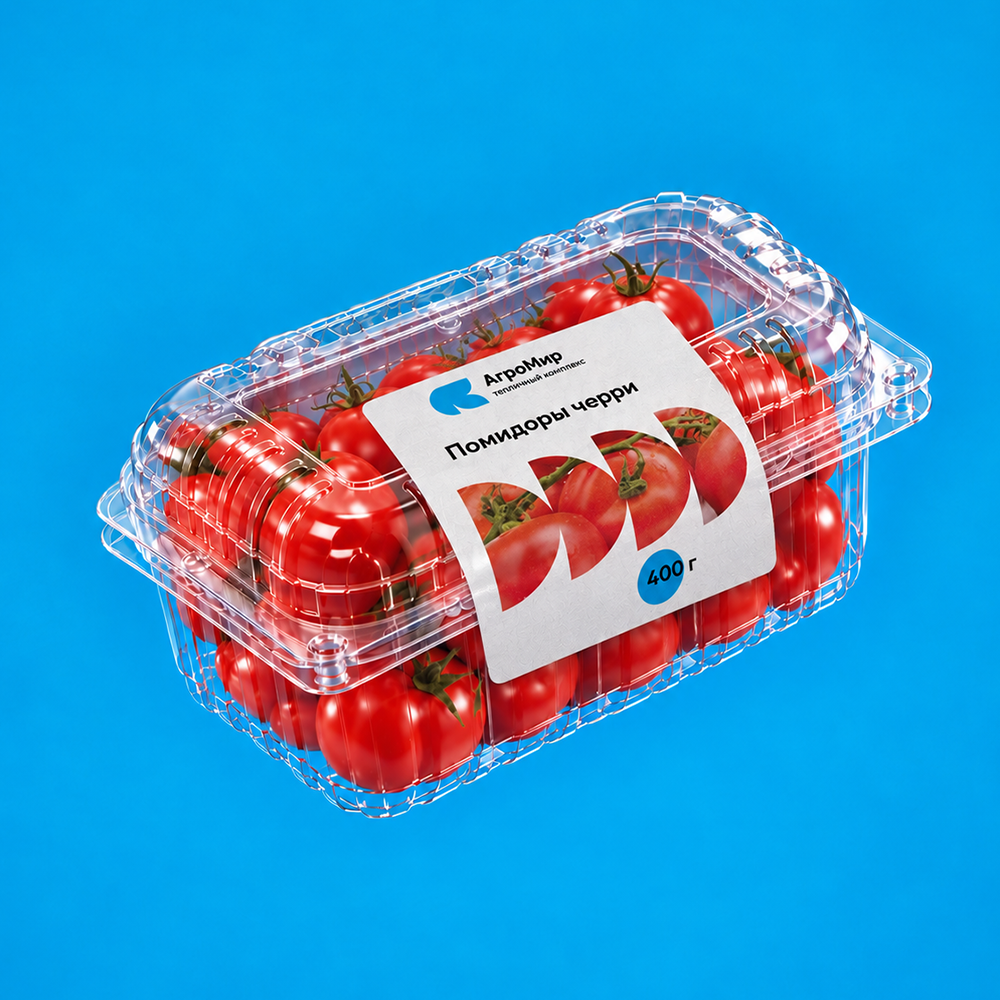

Задача заключалась в создании современной айдентики, передающей технологичность, качество и безопасность без стереотипных образов агросферы.
Основой логотипа стала форма теплицы — полукруг, из которого я вывел буквы «А» и «М», объединив их в лигатуру с силуэтом ветки. Циановый цвет визуально сближает бренд с технологичными компаниями и помогает выделиться на фоне привычной эстетики агросферы. Минималистичная геометрия поддерживает современный характер айдентики.
На основе полукруга я разработал модульные паттерны, которые позволяют создавать разнообразные композиции и размещать внутри разные объекты без потери визуального единства. Палитра из чёрного, циана и белого обеспечивает гибкость логотипа на разных носителях.



